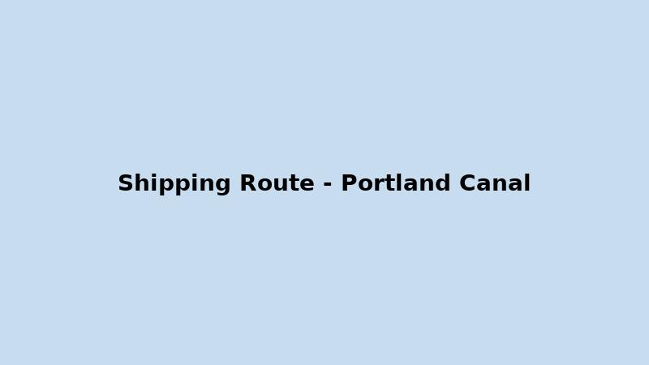

Shipping
The Portland Canal provides direct access to the Pacific Ocean. It is ice-free, deep, and wide, with minimal existing ship traffic. This ensures reliable year-round shipping without delays from ice or fog.
